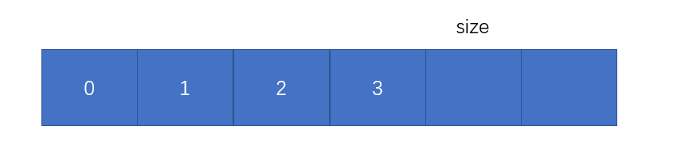
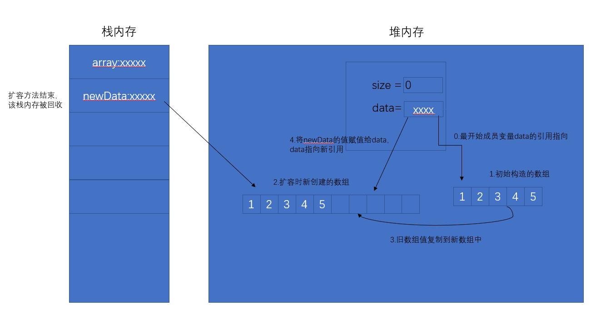

废话不多说，上代码
1.从类名开始（我真是太贴心了，给自己点个赞）
public class Array<E>首先数组类需要带有泛型，这个不多说。需要注意的是在java中，数组只能存放同一个类型的。
2.成员变量
private int size; //数组中元素的个数
private E[] data; //数组声明
插个题外话：
关于size和索引，最开始学数组时让我很伤神，首先数组的索引是从0开始，而size是指数组中元素的
的个数，假设数组中有3个元素，那么size=3,而索引则为0,1,2。它们是差一位的，这个神奇的设计让我每次在写循环的界限条件时，
总要换算一下。
比如，遍历出数组的所有元素
for (int i = 0; i < size; i++) { }
我的心路历程是这样的:
首先，第一步想，从0开始，到最后一位元素的索引位置结束，那么最后一位元素的索引是应该进来for循环的，那么i就应该
小于最后一位元素的索引的下一位，那么最后一位元素的索引的下一位是谁呢，对哦，size比索引大一位，那么应该是size，
所以应该i<size;
如果每次写for循环的界限时，都要这么想一下，白白消耗脑力阿。是不是只有我这么笨。
最后我的办法是转化成图来记在脑海里。每次用到的时候，直接脑海里浮现出这个图。

学习的本质就是将复杂的东西简单化。
3.构造方法
一种用户指定初始数组容量
一种用户不指定初始数组容量
public Array (int capacity) {
data = (E[])new Object[capacity];
size = 0;
}
public Array () {
this(10); //调用另一个构造方法，并默认初始容量为10
}
4.居家必备的基本方法
//获得数组元素个数
public int getSize () {
return size;
}
//获得数组长度
public int getCapacity () {
return data.length;
}
//获得数组是否为空
public boolean isEmpty () {
return size == 0;
}
5.添加方法
数组添加的本质就是：从后往前到指定索引位置，每个元素向后移一个格，给新来的腾出个地方。
重点：从后往前//向数组指定位置添加元素，index为指定索引位置，e为添加的值
public void add (int index, E e) {
//索引位置不能让它瞎插，索引为负数，或者跳格子插，不可以。
if (index < 0 || index > size) {
throw new IllegalArgumentException("add is fail, require index < 0 || index > size");
}
//当数组容量满了的时候，调用扩容方法，此处给它扩当前数组长度的两倍。
if (data.length == size) {
this.resize(data.length * 2);
}for (int i = size - 1; i >= index; i--) {
data[i+1] = data[i];
}
//新来的进坑
data[index] = e;
//维护size
size ++;
}
//向数组第一位添加元素
public void addFirst (E e) {
//直接复用上一个add方法
this.add(0, e);
}
//向数组最后一位添加元素
public void addLast (E e) {
//同理
this.add(size, e);
}
6.删除方法（我个人分为两种，一种根据索引删除，一种根据值删除）
删除的本质：和添加相反，从要删除的索引位置的下一位开始，到最后一位元素索引位置结束，依次向前占一个坑。
重点：遍历的时候从前往后//根据索引删除某个元素 返回删除的元素
public E remove (int index) {
if (index < 0 || index >= size) {
throw new IllegalArgumentException("remove is fail,require index < 0 || index >= size");
}
//先把要删除的元素存起来，不然等会就给覆盖了。
E value = data[index];
for (int i = index + 1; i < size; i++) {
data[i-1] = data[i];
}
//维护size
size --;
//此处为什么设置为null呢，因为泛型的原因，传进来的都是类对象，数组中存的是引用地址，引用不断开的话，垃圾回收器没办法回收。
data[size] = null;
//此处缩容，当数组元素个数等于数组长度四分之一时，进行缩容
if (size == data.length/4 && data.length / 2 != 0) {
//缩容为数组长度的二分之一
this.resize(data.length /2);
}
return value;
}
问题来了，为什么不在二分之一时就进行缩容呢？而是四分之一呢？
此处涉及到复杂度震荡问题，比较极端的一个情况是：
比如容量为10的一个数组，
此时该数组满了，此时要进来个元素，然后数组进行扩容，那么添加完元素此时数组的情况为容量为20，
内部有11个元素。
此时我再对数组进行删除一个元素，删除之后，数组元素个数变为10个，恰好为数组长度的二分之一，
那么自动进行缩容，以此类推，反复操作，每次扩容缩容的时间复杂度为O(n)，所以此处应用了lazy的解决方案
就是等到数组元素个数为数组长度的四分之一时，再进行缩容，就可以避免这个问题。
//根据值删除某个元素
public void removeByValue (E e) {
//复用根据值查找元素的方法，返回索引（此方法在下面）
int index = this.getByElement(e);
if (index != -1) {
//复用根据索引删除的方法
this.remove(index);
}
}
//删除第一个元素
public E removeFirst () {
return this.remove(0);
}
//删除最后一个元素
public E removeLast () {
return this.remove(size - 1);
}
7.查找方法（同样分为两种，一种根据索引，一种根据值）
//根据索引查找数组某个元素,返回值
public E getByIndex (int index) {
if (index < 0 || index >= size) {
throw new IllegalArgumentException("get is fail, require index < 0 || index >= size");
}
return data[index];
}
//根据值查找数组某个元素,返回索引
public int getByElement (E e) {
//本质：遍历数组进行比对
for (int i = 0; i < size; i++) {
if (data[i].equals(e) ) {
return i;
}
}
return -1;
}
//是否包含该元素
public boolean contains (E e) {
//本质：遍历数组进行比对
for (int i = 0; i < size; i++) {
if (data[i].equals(e)) {
return true;
}
}
return false;
}
8.修改方法
//修改数组某个元素
public void set (int index, E e) {
if (index < 0 || index >= size) {
throw new IllegalArgumentException("set is fail, require index < 0 || index >= size");
}
data[index] = e;
}
9.扩容方法
扩容的本质：就是开辟个新数组，把旧数组的内容复制过去
private void resize (int newCatacity) {
E[] newData = (E[])new Object[newCatacity];
for (int i = 0; i < size; i++) {
newData[i] = data[i];
}
//给成员变量data重新赋值新引用（后面有内存图介绍）
data = newData;
}画个扩容引用转换的内存图
测试代码
public static void main(String[] args) {
Array<Integer> array = new Array(5);
array.addLast(1);
array.addLast(2);
array.addLast(3);
array.addLast(4);
array.addLast(5);
}

10.toString方法
本质就是：创建一个StringBuilder对象，然后通过append方法，将数组的内容遍历，添加进StringBuilder对象。
@Override
public String toString () {
StringBuilder stringBuilder = new StringBuilder();
//Format(String, Object, Object) 将指定的 String 中的格式项替换为两个指定的 Object 实例的值的文本等效项。
stringBuilder.append(String.format("size =%d ,capacity =%d\n ", size, data.length));
stringBuilder.append('[');
for (int i = 0; i < size; i++) {
stringBuilder.append(data[i]);
if (i != size -1) {
stringBuilder.append(',');
}
}
stringBuilder.append(']');
return stringBuilder.toString();
}
最后，
浮于表面看千遍，
不如自己思一遍，
希望这篇文章能够对你起到帮助。